1. 资源调度，driver的TS向master申请资源
1.1 图
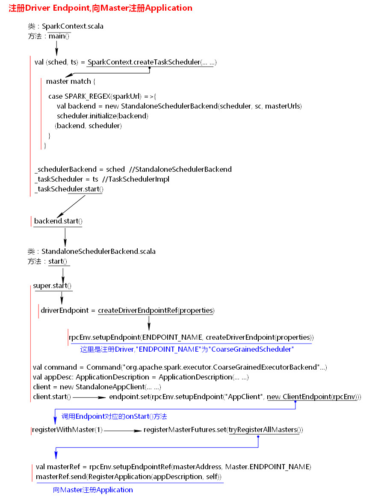
1.2 src
1.2.1 启动集群，分别执行master和worker的脚本，执行Master的main，创建基于netty的RPCEnv通信环境，并且把master的Endpoint对象注册到框架中
1.2.2 在client执行SparkSubmit，执行SparkSubmit的main，封装参数，创建RPC通信环境把Client的ClientEndPoint注册到环境中，调用Master在随机Worker中创建dirver，然后driver会执行提交的jar的main
1.2.3 提交，封装参数，启动client的主类，向master发送启动消息，master创建driverDesc，master随机在worker上启动driver，执行提交的jar的主类的main，执行new sparkContext，创建DS和TS，
1.3 创建RD，TS，执行各自的start。TS负责资源申请，会创建CoarseGrainedSchedulerBackend的对象来调用start方法。CoarseGrainedSchedulerBackend封装了粗粒度申请资源的方法
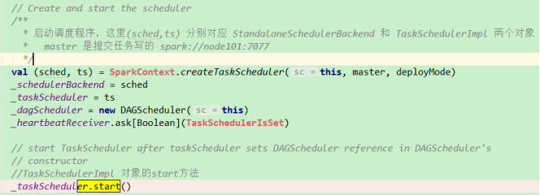
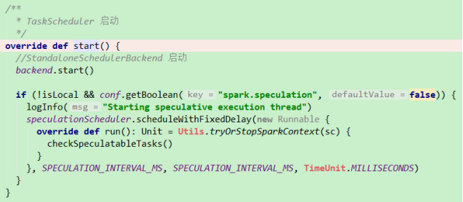
1.3.1 backend调用start跟进去会发现调用的是super.start()，而super就是粗粒度的CoarseGrainedSchedulerBackend，作用就是创建driverEndpoint并注册
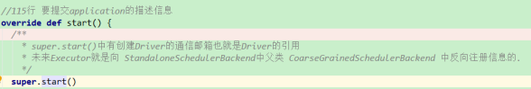
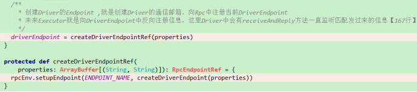
1.4 通信环境准备好，开始申请资源，创建Command对象 ，并且用ApplicationDesc对象封装，然后再用StandaloneAppClient封装，执行 StandaloneAppClient的start
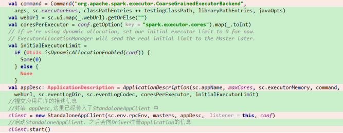
1.4.1 创建一个AppClient对象，AppClient向Master申请资源，调用第二个参数Endpoint的onStart方法。获取master的引用，给master发消息，申请资源
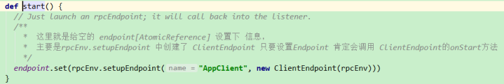
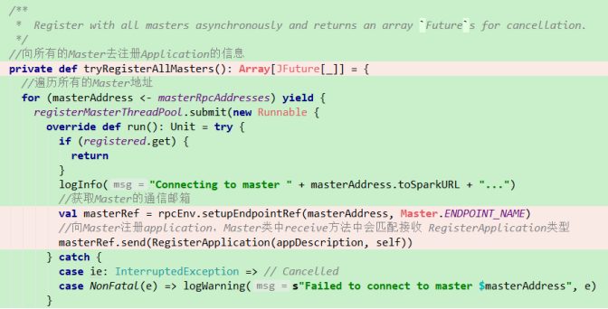
1.5 回到Master，查看Master怎么处理申请资源的消息
1.5.1 receive方法中用模式匹配判断是否是申请APP的消息，调用createApplication，把ApplicationDesc对象传入。注册App，会在等待注册的app集合中添加。最后执行schedule，这个方法在注册driver中就调用过。
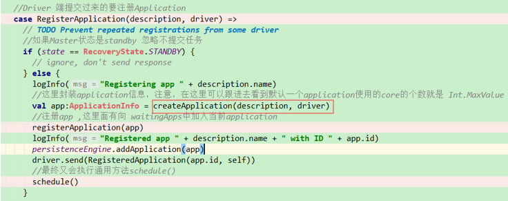
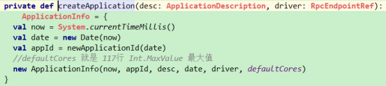
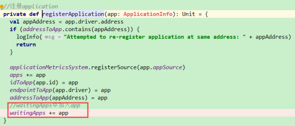
1.5.2 schedule会调用startExecutorsOnWorkers()，获取资源申请信息，然后遍历worker，过滤出可用的且硬件资源足够的，然后以core空闲数大到小排序。创建Executor
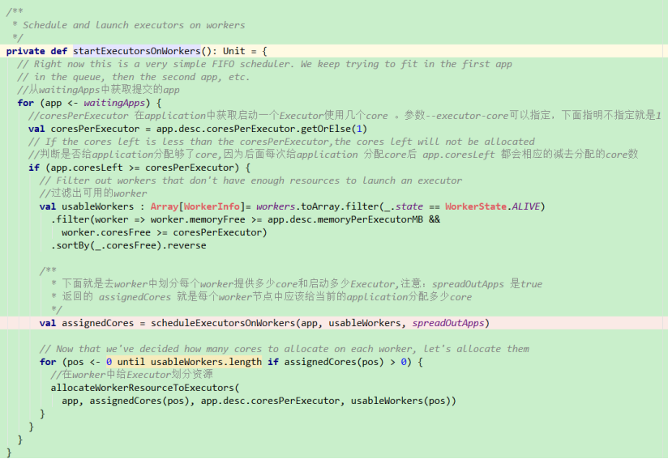
{1} 从app.desc也就是ApplicationDesc对象中获取资源信息
[1] app.desc.coresPerExecutor就是--executor-core
{2} app.coresleft 判断是否给application分配够了core,因为后面每次给application 分配core后 app.coresLeft 都会相应的减去分配的core数